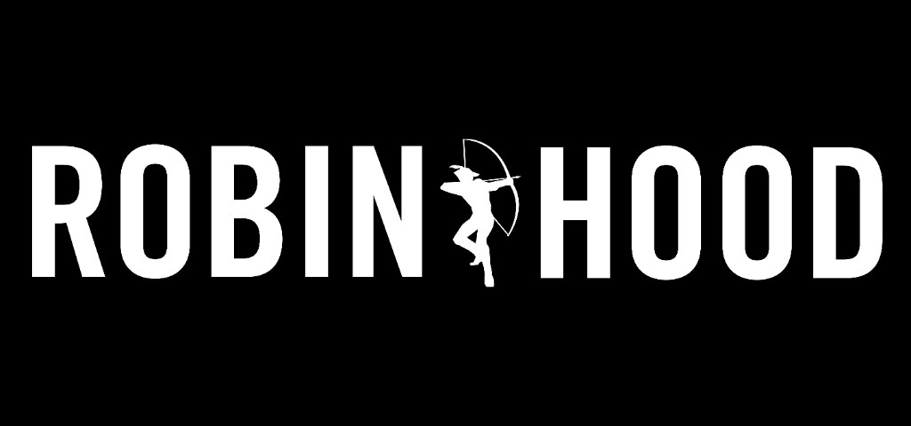
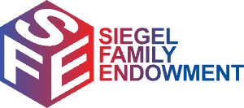

01
Visit Pursuit →
Pursuit
I co-founded a non-profit that creates job pathways for low-income adults. For the past decade we've produced life-changing outcomes for participants — who go from $18K to over $94K working at companies like Uber, Blackstone, Citi, and Peloton.
In the past year we've completely transformed — now fully teaching AI and placing participants into AI jobs. We've also launched pilots to train other non-profits and small and medium businesses in AI.
Select Funders & Partners
Featured Press

